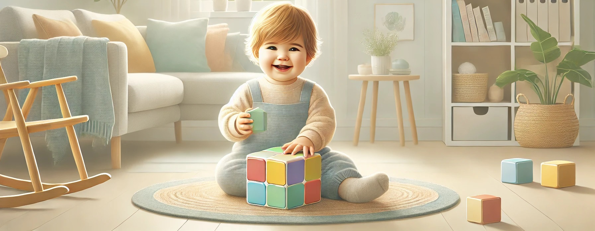

What Should a KG1 Child Know by the End of the Year?

Kindergarten 1
KG1 is a magical and essential stage in a child’s early learning journey. It’s often the first time a child enters a structured learning environment - full of new experiences, friendships, and discoveries. But what exactly should a KG1 child know by the end of the year?
Let’s explore the key developmental and academic milestones expected of KG1 learners, helping parents and educators support a joyful and well-rounded early education experience.
Cognitive and Academic Development
At this age, learning is play-based and exploratory. By the end of KG1, children typically
Early Literacy
⁕ Recognize some or all uppercase letters (A–Z).
⁕ Recognize some lowercase letters, especially the letters in their name.
⁕ Identify their own name in print.
⁕ Understand that print carries meaning (signs, labels, books).
⁕ Begin to identify sounds of some letters (phonemic awareness).
⁕ Enjoy listening to stories, rhymes, and songs.
⁕ Begin to retell familiar stories with help.
⁕ Pretend to read or show interest in books.
⁕ Begin tracing or copying letters, especially those in their name.
Focus is on recognition and exposure, not mastery of reading.
Early Math
⁕ Count by rote to at least 10 or 20.
⁕ Recognize numbers 1–10 (or beyond).
⁕ Count objects using one-to-one correspondence (up to 10 items).
⁕ Sort objects by size, color, or shape.
⁕ Recognize basic shapes (circle, square, triangle, rectangle).
⁕ Understand basic size comparisons (hot/cold, long/short).
⁕ Match and group objects by simple attributes.
Math in KG1 is very concrete - based on real-world experiences and manipulatives.
Social and Emotional Development
KG1 is a big step socially, and much of the year focuses on helping children:
⁕ Adjust to routines and transitions (circle time, snack time, etc.).
⁕ Follow simple directions (1–2 steps).
⁕ Share toys and take turns with peers.
⁕ Express feelings with words (“I’m sad,” “I want to play”).
⁕ Play cooperatively in pairs or small groups.
⁕ Begin resolving small conflicts with adult support.
⁕ Develop self-regulation skills, like waiting and listening.
⁕ Show pride in accomplishments and build confidence.
This is a foundational year for developing empathy and independence.
Fine and Gross Motor Development
Developing motor skills is a key part of KG1. By the end of the year, children typically:
Fine motor skills:
⁕ Hold crayons and markers with control (not necessarily perfect pencil grip).
⁕ Trace basic lines and shapes.
⁕ Use scissors to cut along straight or curved lines.
⁕ Build with blocks, beads, or other manipulatives.
⁕ Color within large shapes.
⁕ Begin to write or copy their name.
Gross motor skills:
⁕ Run, jump, hop, and climb with coordination.
⁕ Catch and throw a ball with some accuracy.
⁕ Walk in a straight line or balance on one foot briefly.
⁕ Participate in music and movement activities.
Daily movement is crucial - through play, dance, and outdoor activity.
Science and Discovery
In KG1, science is all about exploration and observation. By year’s end, children should:
⁕ Use their five senses to observe and describe the world.
⁕ Identify weather and seasons (hot/cold, rainy/sunny).
⁕ Talk about animals and plants using simple words.
⁕ Explore cause and effect through play and hands-on activities.
⁕ Recognize basic body parts and their functions.
⁕ Ask lots of questions about the world around them.
It’s not about memorizing facts - it’s about building curiosity!
Social Studies and Life Skills
KG1 children are beginning to understand themselves and their place in the world. They can:
⁕ Talk about themselves and their family (name, age, parents).
⁕ Recognize community helpers (doctor, firefighter, teacher).
⁕ Understand classroom roles and routines.
⁕ Identify and name classroom objects and materials.
⁕ Follow rules like “be kind,” “clean up,” or “raise your hand.”
These topics are taught through stories, role-play, and classroom discussions.
Arts, Music, and Imaginative Play
Creativity blossoms in KG1! Children should have opportunities to:
⁕ Explore different art materials (crayons, paint, paper, clay).
⁕ Draw recognizable objects (a sun, house, face).
⁕ Sing simple songs and participate in action rhymes.
⁕ Use instruments to explore rhythm and sound.
⁕ Engage in pretend play (shop, doctor, cooking, etc.).
⁕ Act out simple stories or real-life situations.
Creative expression builds confidence, language, and emotional growth.
Technology Readiness (Optional)
If available, some children may:
⁕ Use a touchscreen to play educational games.
⁕ Recognize basic computer parts (screen, keyboard, mouse).
⁕ Follow simple digital instructions with adult guidance.
This is optional and should be developmentally appropriate and limited.
Final Thoughts
KG1 is not about academics alone - it's about nurturing curiosity, confidence, independence, and joy in learning. Every child grows at their own pace. What’s important is consistent progress, hands-on exploration, and a safe space to thrive.
With loving support from teachers and caregivers, your KG1 child will blossom and be ready to soar in KG2!